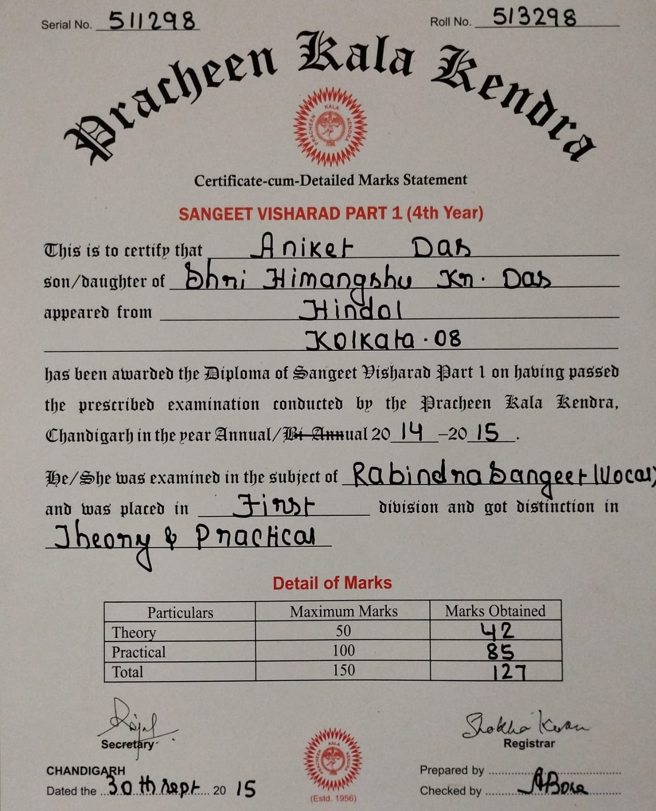
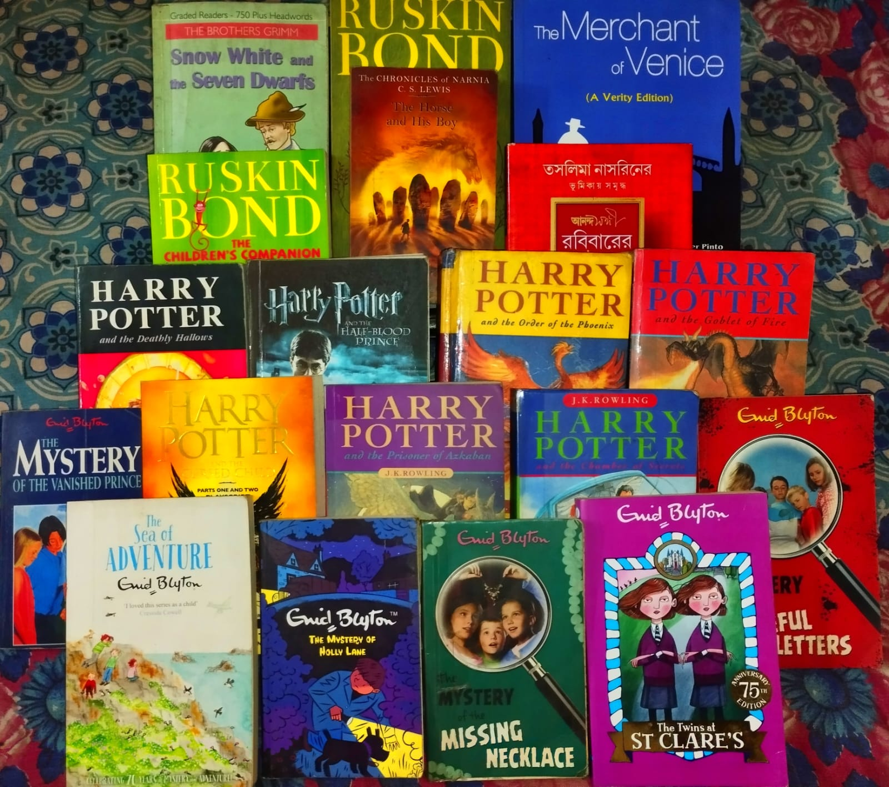

Aniket Das
Front-End Web Development
Tech and Coding Enthusiast
Hi! Welcome to my First Website where you can see my portfolio. Let us have a short trip by scrolling below. Hope you like it.
My present objective and aim is to secure an entry-level position in a reputable organization where I can utilize my technical knowledge, learn new skills, and contribute to the growth of the company with utmost proficiency, sincereity and dedication. Wish me all the best!
Featured Projects
You can find some of my highlights below.
Indian Patent Application Number 202331039743
Using IoT and Image Processing, a Design Based Patent for Waste Water Segregation and Management.
The Internet of Things is associated with almost every luxury in our life ranging from smart cities to smart homes, traffic management system to transportation and various other fields. Waste Water Management System is one such field which is highly impacted by the Internet of Things. It is definitely challenging to ensure the proper utilization of water, but proper implementation of IoT technology in water management systems will surely make our lives convenient and conserve our valuable resources. According to United Nations Development Programme, water scarcity is caused mainly because of the poor management of the resource. It is believed that almost half of the world population will face water scarcity by 2025 which clearly indicates that water will be a valuable resource in near future.
You can view the complete case study in the INPASS Portal below. It is the Indian Patent Advanced System Search, the official portal of the Government of India concerning patent publications.
INPASS PortalFirst Website
You are already viewing my very first porfolio resume website.
Have your patience. More are yet to arrive ;)
Certifications and Skills
Cybersecurity

To explore the vast multitudes of underlying security mechanisms in our day to day internet usage, I came to know regarding the Basics of Cybersecurity Principles professionally certified by IBM and brought by Coursera, under the KIIT Student Skilling Program 2023.
Front-End Web Development

Say, what is a Software Development Engineer without Web Development Skills? I think, designing websites through code is a hobby now.
You can find other related skillset here on my LinkedIn Profile.
Education
Kalinga Institute of Industrial Technology (KIIT-DU) - Bhubaneswar
Bachelor of Technology (B.Tech.) in Computer Science Engineering (CSE)
CGPA: 9.95 and SGPA: 9.95
2022-2026
Birla Bharati School - Kolkata
Class 11 and 12, 2020-2022
AISSCE 2022 Grade: 95.8%
National Gems Higher Secondary School - Kolkata
Kindergarten to Class 10, 2007-2020
ISCE 2020 Grade: 96.8%
Bidya Bhavan School - Kolkata
Nursery, 2006-2007
Hobbies and Extracurricular Activities
Eastern Singing and Recitation
Have 8+ years of vocal training in Indian Classical and Regional Songs. Passed 4th Year in Rabindra Sangeet (Sangeet Visharad Part I) certified by Pracheen Kala Kendra, Chandigarh. Passed 3rd Year in Synthesiser (Keyboard Instrument) under Bangiya Sangeet Parishad. Performed in numerous local Singing Competitons and Programme. Also received basic certifications in Painting and Art from the same institute. In the link below you can see me performing on Rabindra Jayanti celebrated at our school which was uploaded on YouTube.
HereReading
Love enjoying fiction works. A Proud owner of the entire Harry Potter collection along with Lord of the Rings, The Hobbits, Enid Blyton mystry series and many others. Also watched works adapted for television like Shadowhunters, Marvel and DC Franchise.